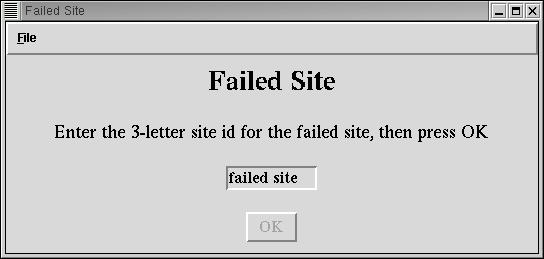
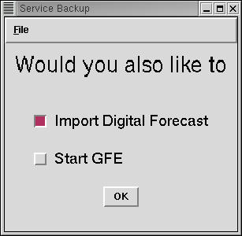
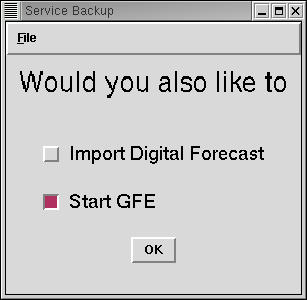
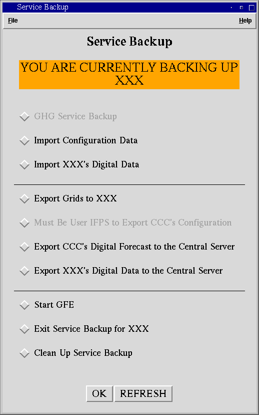
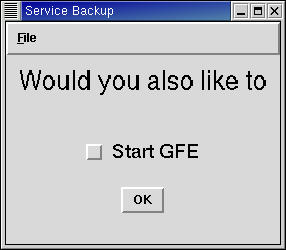
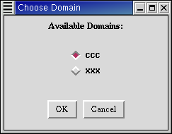

Service Backup GUIINSTRUCTIONS |
HOW TO START GHG SERVICE BACKUP
HOW TO IMPORT A FAILED SITE'S CONFIGURATION AND DIGITAL DATA AND START THEIR GFE IN ONE STEPHOW TO IMPORT A FAILED SITE'S CONFIGURATION AND DIGITAL DATA IN ONE STEP
HOW TO IMPORT A FAILED SITE'S CONFIGURATION AND START THEIR GFE IN ONE STEP
HOW TO IMPORT A FAILED SITE'S CONFIGURATION
HOW TO IMPORT A FAILED SITE'S DIGITAL DATA AND START THEIR GFE IN ONE STEP
HOW TO IMPORT A FAILED SITE'S DIGITAL DATA
HOW TO EXPORT GRIDS BACK TO A FAILED SITE
HOW TO EXPORT A FAILED SITE'S DIGITAL DATA TO THE CENTRAL SERVER
HOW TO EXPORT YOUR CONFIGURATION TO THE CENTRAL SERVER
HOW TO EXPORT YOUR DIGITAL DATA TO THE CENTRAL SERVER
HOW TO START GFE FROM THE SERVICE BACKUP GUI
HOW TO CLEAN UP SERVICE BACKUP
HOW TO START GHG SERVICE BACKUP [BACK TO THE TOP]
1, Verify that the banner at the top of the Service Backup GUI reads "YOU ARE NOT IN BACKUP MODE." If you are already in backup mode for another site, you will need to run the clean up script first.
2. Select GHG Service Backup and press OK.
3. The script will first check to see if there are any service backup files present that may cause a problem. If any are found, you will be prompted to clean up. If you wish to clean up and continue, select CLEAN. Otherwise, select QUIT to return to the Service Backup GUI.

If no files are found, the script will run silently and you will not be notified.
4. Another GUI will appear, asking for the ID of the failed site. Enter the failed site's 3 letter ID and press OK.

5. After a few minutes, a progress bar will appear with the status of the failed site's configuration. When it is finished, you may close the progress bar.
6. Once the configuration import is complete and the failed site's server is started, the Service Backup GUI will make up to ten attempts to connect to the server. If it is not able to connect after ten attempts, you will be notified and will not be allowed to continue.

7. Once the GUI is able to connect to the server, the GFE Startup GUI will appear. Select a User, Config file, and Mode and press Start. At this point, you will be able to generate the failed site's warnings. Once you have done this, you can import the failed site's digital data and perform a full service backup.
HOW TO IMPORT A FAILED SITE'S CONFIGURATION AND DIGITAL DATA AND START THEIR GFE IN ONE STEP [BACK TO THE TOP]
1. Verify that the banner at the top of the Service Backup GUI reads "YOU ARE NOT IN BACKUP MODE." If you are backing up another site, you will need to clean up first.
2. Select Import Configuration Data and press OK.
3. The script will first check to see if there are any service backup files present that may cause a problem. If any are found, you will be prompted to clean up. If you wish to clean up and continue, select CLEAN. Otherwise, select QUIT to return to the Service Backup GUI.
If no files are found, the script will run silently and you will not be notified.
4. Another GUI will appear asking you "Would you also like to Import Digital Forecast and/or Start GFE." Verify that both buttons are selected and press OK.

5. Another GUI will appear, asking for the ID of the failed site. Enter the failed site's 3 letter ID and press OK.
6. After a few minutes, a progress bar will appear with the status of the failed site's configuration. When it is finished, you may close the progress bar.
7. Once the configuration import is complete and the failed site's server is started, the Service Backup GUI will make up to ten attempts to connect to the server. If it is not able to connect after ten attempts, you will be notified and will not be allowed to continue.
8. If the GUI is able to connect to the failed site's server, you will see another progress bar appear with the status of the import of the failed site's digital data. When it is finished, you may close the progress bar.
9. If the import of the digital data is successful, the GFE Startup GUI will appear. Select a User, Config file, and Mode and press Start.
HOW TO IMPORT A FAILED SITE'S CONFIGURATION AND DIGITAL DATA IN ONE STEP [BACK TO THE TOP]
1. Verify that the banner at the top of the Service Backup GUI reads "YOU ARE NOT IN BACKUP MODE." If you are already in backup mode, you will need to clean up first.
2. Select Import Configuration Data and press OK.
3. The script will first check to see if there are any service backup files present that may cause a problem. If any are found, you will be prompted to clean up. If you wish to clean up and continue, select CLEAN. Otherwise, select QUIT to return to the Service Backup GUI.
If no files are found, the script will run silently and you will not be notified.
4. Another GUI will appear asking you "Would you also like to Import Digital Forecast and/or Start GFE." Verify that only the "Import Digital Data" button is selected and press OK.

5. Another GUI will appear, asking for the ID of the failed site. Enter the failed site's 3 letter ID and press OK.
6. After a few minutes, a progress bar will appear with the status of the failed site's configuration. When it is finished, you may close the progress bar.
7. Once the configuration import is complete and the failed site's server is started, the Service Backup GUI will make up to ten attempts to connect to the server. If it is not able to connect after ten attempts, you will be notified and will not be allowed to continue.
8. If the GUI is able to connect to the failed site's server, you will see another progress bar appear with the status of the import of the failed site's digital data. When it is finished, you may close the progress bar.
HOW TO IMPORT A FAILED SITE'S CONFIGURATION AND START THEIR GFE IN ONE STEP [BACK TO THE TOP]
1. Verify that the banner at the top of the Service Backup GUI reads "YOU ARE NOT IN BACKUP MODE." If you are already in backup mode, you will need to clean up first.
2. Select Import Configuration Data and press OK.
3. The script will first check to see if there are any service backup files present that may cause a problem. If any are found, you will be prompted to clean up. If you wish to clean up and continue, select CLEAN. Otherwise, select QUIT to return to the Service Backup GUI.
If no files are found, the script will run silently and you will not be notified.
4. Another GUI will appear asking you "Would you also like to Import Digital Forecast and/or Start GFE." Verify that only the "Start GFE" button is selected and press OK.

5. Another GUI will appear, asking for the ID of the failed site. Enter the failed site's 3 letter ID and press OK.
6. After a few minutes, a progress bar will appear with the status of the failed site's configuration. When it is finished, you may close the progress bar.
7. Once the configuration import is complete and the failed site's server is started, the Service Backup GUI will make up to ten attempts to connect to the server. If it is not able to connect after ten attempts, you will be notified and will not be allowed to continue.
8. If the GUI is able to connect to the failed site's server, the GFE Startup GUI will appear. Select a User, Config file, and Mode and press Start.
HOW TO IMPORT A FAILED SITE'S CONFIGURATION [BACK TO THE TOP]
1. Verify that the banner at the top of the Service Backup GUI reads "YOU ARE NOT IN BACKUP MODE." If you are already in backup mode, you will need to clean up first.
2. Select Import Configuration Data and press OK.
3. The script will first check to see if there are any service backup files present that may cause a problem. If any are found, you will be prompted to clean up. If you wish to clean up and continue, select CLEAN. Otherwise, select QUIT to return to the Service Backup GUI.
If no files are found, the script will run silently and you will not be notified.
4. Another GUI will appear asking you "Would you also like to Import Digital Forecast and/or Start GFE." Verify that both buttons are deselected and press OK.

5. Another GUI will appear, asking for the ID of the failed site. Enter the failed site's 3 letter ID and press OK.
6. After a few minutes, a progress bar will appear with the status of the failed site's configuration. When it is finished, you may close the progress bar.
HOW TO IMPORT A FAILED SITE'S DIGITAL DATA AND START THEIR GFE IN ONE STEP [BACK TO THE TOP]
1. Verify that the banner at the top of the Service Backup GUI reads "YOU ARE CURRENTLY BACKING UP XXX" (where XXX is a failed site). If it doesn't, you must first import the failed site's configuration

2. Select Import XXX's Digital Data and press OK.
3. Another GUI will appear asking you "Would you also like to Start GFE." Verify that "Start GFE" is selected and press OK.

4. After a few minutes, a progress bar will appear with the status of the failed site's digital data. When it is finished, you may close the progress bar.
5. If the import is successful, the GFE Startup GUI will appear. Select a User, Config file, and Mode and press Start.
HOW TO IMPORT A FAILED SITE'S DIGITAL DATA [BACK TO THE TOP]
1. Verify that the banner at the top of the Service Backup GUI reads "YOU ARE CURRENTLY BACKING UP XXX" (where XXX is a failed site). If it doesn't, you must first import the failed site's configuration.
2. Select Import XXX's Digital Data and press OK.
3. Another GUI will appear asking you "Would you also like to Start GFE." Verify that "Start GFE" is deselected and press OK.

4. After a few minutes, a progress bar will appear with the status of the failed site's digital data. When it is finished, you may close the progress bar.
HOW TO EXPORT GRIDS BACK TO A FAILED SITE [BACK TO THE TOP]
1. Verify that the banner at the top of the Service Backup GUI reads "YOU ARE CURRENTLY BACKING UP XXX" (where XXX is a failed site). If it doesn't, you must first import the failed site's configuration.
2. Select Export Grids to XXX and press OK.
3. A message will appear saying "Exporting Digital Data Back to XXX" (where XXX is the failed site).

HOW TO EXPORT A FAILED SITE'S DIGITAL DATA TO THE CENTRAL SERVER [BACK TO THE TOP]
1. Verify that the message at the top of the GUI reads "YOU ARE CURRENTLY BACKING UP XXX" (where XXX is a failed site). If it doesn't, you must first import the failed site's configuration.
2. Select Export XXX's Grids To The Central Server and press OK.
3. A message will appear saying "Exporting XXX's Digital Data To The Central Server" (where XXX is the failed site).

HOW TO EXPORT YOUR CONFIGURATION TO THE CENTRAL SERVER [BACK TO THE TOP]
1. Start the Service Backup GUI as user ifps. to do this:
a. su ifps
b. cd /awips/ifps/primary/bin
c. ./service_backup.bat
2. Verify that the message at the top of the GUI reads "YOU ARE NOT IN BACKUP MODE." If it does not, you will not be able to export your configuration to the central server.
3. Select Export CCC's Configuration to the Central Server (where CCC is your site's 3 letter ID) and press OK.
HOW TO EXPORT YOUR DIGITAL DATA TO THE CENTRAL SERVER [BACK TO THE TOP]
1. Select Export CCC's Digital Forecast to the Central Server (where CCC is your site's 3 letter ID) and press OK.
HOW TO START GFE FROM THE SERVICE BACKUP GUI [BACK TO THE TOP]
1. Select Start GFE from the Service Backup GUI and press OK.
2. If you are currently in Service Backup Mode or your site has multiple domains, you will be asked which domain you would like to start GFE for. Select a domain and press OK.

If you are not in Service Backup Mode or your site does not have multiple domains, GFE will start for your site.
3. The GFE Startup GUI will appear. Select a User, Config file, and Mode and press Start.
HOW TO EXIT SERVICE BACKUP [BACK TO THE TOP]
1. Verify that the banner at the top of the Service Backup GUI reads "YOU ARE CURRENTLY BACKING UP XXX" (where XXX is a failed site). If it does not, you will not be able to exit service backup.
2. Select Exit Service Backup for XXX (where XXX is a failed site) and press OK.
3. The service backup clean up script will run. If it is successful, the Service Backup GUI will disappear when it is finished.
HOW TO CLEAN UP SERVICE BACKUP [BACK TO THE TOP]
1. Select Clean Up Service Backup from the Service Backup GUI and press OK.
2. If the Service Backup GUI is able to determine the failed site, you will see a message saying "Cleaning Up XXX's Configuration"

3. If the Service Backup GUI cannot determine the failed site's ID, a GUI will appear asking you for the failed site's ID. Enter the failed site's 3 letter ID and press OK.